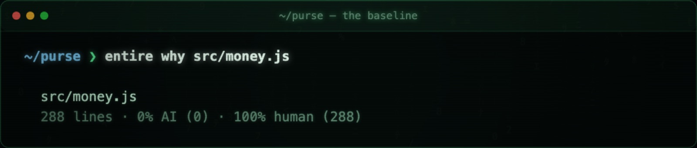
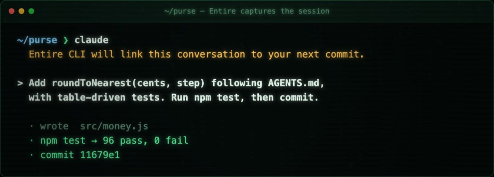
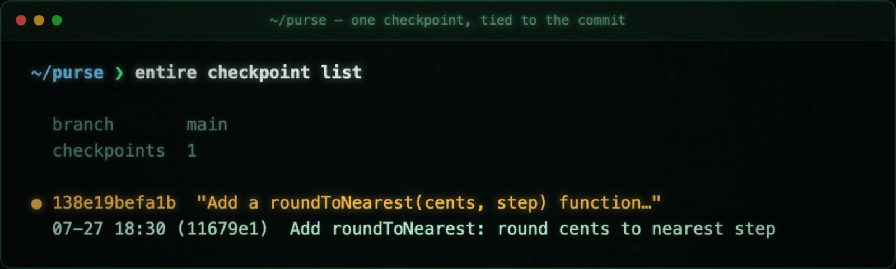
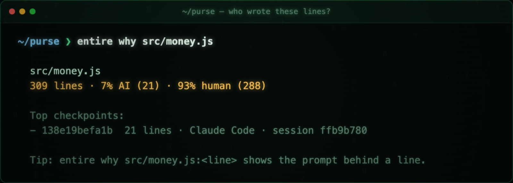
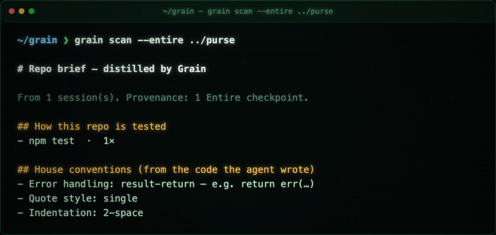
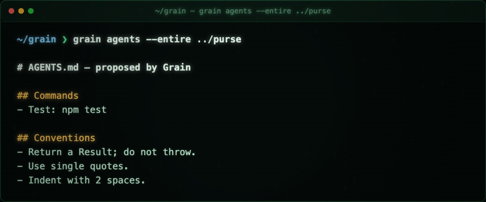
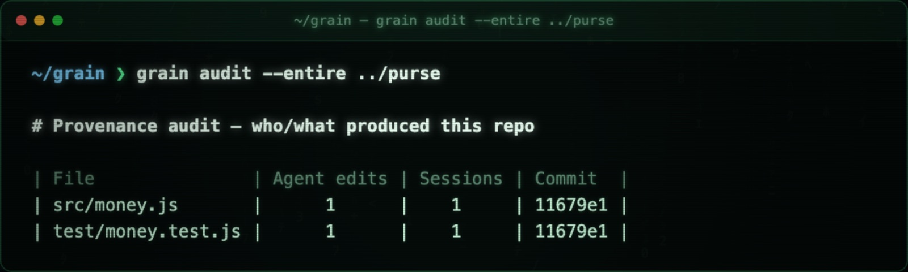

blog-substack.html (images embedded). grain/_launch/images/ — drag them in at the matching spot.
Delete this box before publishing (it's excluded from selection if you start at the title).
How I got early access to Entire, what I found in the first week, and the tool I built on top of it.
Every coding agent I use is brilliant and completely amnesiac.
It writes the code. I correct it. We go back and forth. I steer it away from the three things that don't work in this repo — the util that looks right but isn't, the pattern we abandoned last month, the test style we actually use. Then the pull request merges, and that whole conversation disappears.
All that survives is the diff.
Next session, the agent starts from zero, and I teach it the same things again.
This is the part of AI-assisted engineering nobody has solved yet. We've gotten very good at generating code and completely ignored the record of how the code came to be. That record is the most useful artifact in the building, and we throw it in the bin every time a PR merges.
Entire is aimed at exactly that. They describe themselves as a developer platform for humans and agents — "fast, distributed, independent Git hosting for agents and humans." Two halves, and I initially only appreciated one of them.
Half one — the session layer:
Every agent session stored in your repo.
A checkpoint for every commit.
Context that's attached, not archived.
Instead of the session living in a vendor's dashboard (or nowhere), it lives with your code, linked to the commit it produced. That unlocks the rest of their feature set: review the intent, not just the code (send a branch to multiple agents for an intent-aware review), search across both code and sessions, and resume work across any agent with the full session state carried forward. It works with Claude Code, Codex, Gemini, Cursor, Copilot and others — it isn't tied to one vendor's agent.
Half two — the distributed git network:
This is the part I glossed over at first, and it's arguably the bigger bet. Entire mirrors your repo around the world for maximum agent throughput — regional mirrors in US East, EU Central, and Australia — and "every clone carries its checkpoints and session history at shallow-clone speed."
The thing worth being precise about: it isn't a GitHub replacement. Their own instruction is "keep the repo on GitHub — one command creates a regional mirror." You don't migrate. The differences are additive:
| GitHub | Entire | |
|---|---|---|
| Stores | code + PRs + issues | code + the agent sessions that produced it, linked commit-by-commit |
| Topology | one central origin | a distributed mirror network across regions, tuned for agent throughput |
| Review | read the diff | review the intent — what the agent was asked, and why |
| Search | code and PRs | code and sessions, prompts, reasoning |
| Handoff | clone and rebuild context | resume across agents with session state intact |
| Relationship | — | sits alongside it; mirrors your existing GitHub repo |
The framing that made it click for me: GitHub is built for a world where humans write the commits. Entire is built for a world where agents write a lot of them — so the unit of history isn't just the diff, it's the diff plus the conversation that produced it — and the network is shaped so a fleet of agents can pull that history fast, wherever they're running.
I joined their waitlist on July 9th. On the 15th I got the email — "You're in. Let the rebellion begin." — so I spent the week actually using it on a small library I've been building.
I enabled it in the repo, then asked a simple question: who wrote this file?

The baseline. All me.
Then I let Claude Code add a feature. The moment the session started, Entire said what it was going to do.

“Entire CLI will link this conversation to your next commit.”
And it did — one checkpoint, tied to commit 11679e1, holding the entire session that produced it.

The session and the commit, joined at the hip.
Then I asked the same question again.

Twenty-one lines — and every one traces back to the prompt that created it.
That's an audit trail I've never had before. Not "an AI touched this file sometime" — this prompt produced these lines, in this session, on this commit. You can even ask it per-line: entire why src/money.js:182.
Here's the thought that wouldn't leave me alone.
If the sessions are being kept, and they're linked to commits, then the repo now contains a record of how it is actually built — not the sanitized diff, the real thing. The commands that get run. The conventions the code follows. The corrections a reviewer keeps repeating. The approaches that got tried and backed out.
That's exactly the context an agent needs and never has.
So I built grain — open source, MIT, zero dependencies. It reads captured sessions and distills them into the repo's house rules.

From a single captured session.
It worked out how the repo is tested, that errors return a Result instead of throwing, the quote style, the indentation. Nobody wrote any of that down. It learned it by watching the work happen.
Then it proposes the actual rules file — the one the next agent reads before it writes a line.

A committable AGENTS.md, written from evidence instead of guesswork.
And an audit view — which sessions and commits produced each file.

The “where did this code come from” view.
Four signals, in increasing order of "you could only get this from a session":
That fourth signal is the whole argument for why session capture matters. Your repo's most expensive lessons are the things you stopped doing, and they're invisible to every tool that reads only the final state.
Context in AI-assisted engineering is project-specific. An agent excels when it has learned how to code in your repo, not in the abstract. AGENTS.md and skills carry that context — but writing them is guesswork, because you write them before you've watched an agent work in the codebase.
Captured sessions invert that. The rules get written from evidence:
agent works → Entire captures → grain distills → next agent starts smarterSessions stop being exhaust and start being context. Every session makes the next one better. And it only works because the conversation was kept.
Session transcripts can be more sensitive than the code they produced. They contain reasoning, pasted data, and sometimes live secrets. I hit this immediately — my first scan of raw transcripts surfaced an API token I'd pasted weeks earlier.
So redaction isn't a feature in grain, it's a constraint: nothing leaves the core without passing through it — keys, tokens, JWTs, emails, even home-directory paths — and there's a test asserting known secret shapes never survive. Entire redacts secrets before storage and keeps the metadata on a branch inside your own repo, which is a sane starting posture.
If you're evaluating session-log tooling for a company, those are the questions that matter: where do the logs live, who can read them, how long are they kept, and do they become someone else's training data.
Big thanks to the Entire team for building something genuinely different. This is early — I'm one user with one week on it — but it's the first tool that made my agents' history feel like an asset instead of exhaust.
grain is open source and MIT licensed: github.com/abhid1234/grain
grain scan --entire . # how the repo is really worked in
grain agents --entire . # a proposed AGENTS.md
grain audit --entire . # per-file provenanceIt reads Entire's checkpoints directly, and raw Claude Code transcripts too, so you can try it today.
This is a personal project and a personal opinion — not an endorsement, and not advice. Evaluate any tool against your own security and compliance requirements.